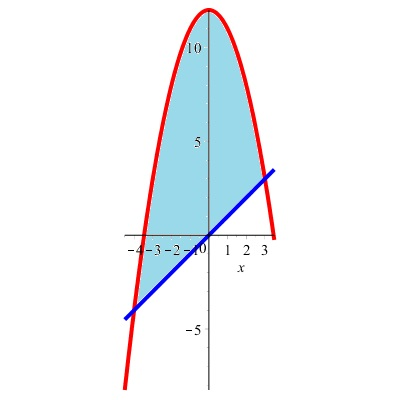

Find the area of the finite region between the graphs of \(y = 16 - x^{2}\) and \(y = x + 4\text{.}\)

Solution.
We check for intersection points:
\begin{align*}
16 - x^2 \amp = x + 4, \hbox{so} \\
0 \amp = x^2 + x - 12, \hbox{so that} \\
0 \amp = (x + 4) \cdot (x - 3).
\end{align*}
Then \(x = -4\) and \(x = 3\) are the solutions to the equation and, hence, the \(x\)-coordinates of the intersection points of the graphs.
The area is then given by
\begin{align*}
\int_{-4}^{3}\ ((16 - x^2) - (x + 4))\,dx \amp = \int_{-4}^{3}\ (-x^2 - x + 12)\,dx \\
\amp = \left.\left(-\frac{1}{3}x^3 - \frac{1}{2}x^2 + 12x \right)\right|_{-4}^3 \\
\amp = \left(\frac{45}{2}\right) - \left(-\frac{104}{3}\right) \\
\amp = \frac{135}{6} + \frac{208}{6} \\
\amp = \frac{343}{6} \\
\amp = 57\frac{1}{6}.
\end{align*}